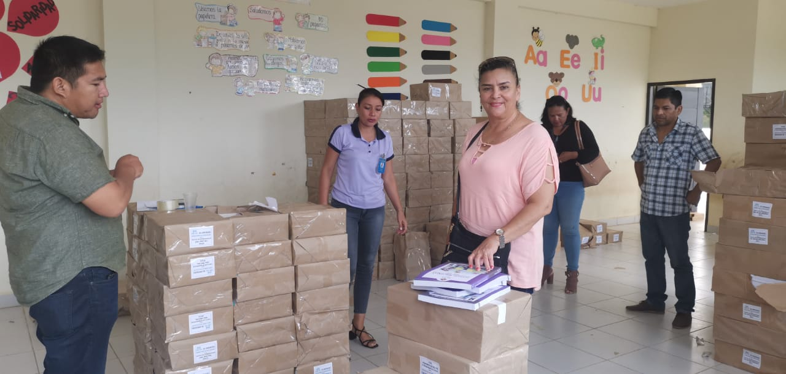

Misión
La misión de la Dirección Distrital de Educacion es implementar de manera transparente y oportuna las Políticas Educativas y de Administración Curricular en el Distrito Educativo, así como la Administración y Gestión de los recursos en el Ambito de su jurisdicción, competencias y funciones.
Visión
La Visión se enfoca en garantizar la Educación productiva comunitaria y de calidad en todo el Distrito Educativo, con pertinencia sociocultural, contribuyendo a la construccion de una sociedad justa, en equilibrio y relación armónica con la naturalezapara el vivir bien.
Consolidarnos como una Direccion Distrital de Educación referente al servicio del Sistema Educativo Plurinacional que sostenga la Calidad Educativa con calidez en su atencion, con personal Técnico comprometidos con las Políticas Educativas, que consoliden la justicia social e igualdad en el Estado Plurinacional.
Galeria
-
Entrega de Computadoras
-

Entrega de Textos de Aprendizaje
-

Acto Civico Dia del Mar
-
Dia del Maestro
-
Entrega de Certificados BTH
-

Feria de Prevencion contra la Corrupcion